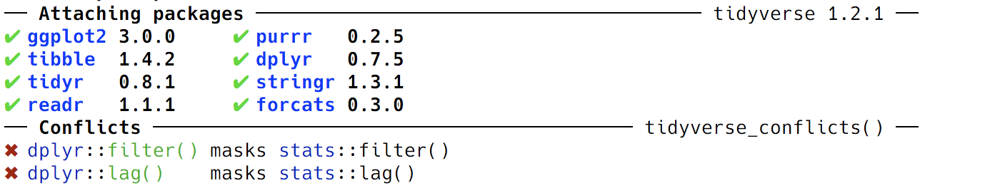

Session 2
July 25, 2018
Review
Functions and Arguments
What can you tell me about the value that will be returned when I run:
Result
[1] 0.8741508Variable Names
Which of these are valid variable names?
min_height
min.height
minHeight
MINHEIGHT
min-height
.min.height
_min_height
0height
min0height
`Minimum Height`Results
These are all fine:
min_height <- 14
min.height <- 14
minHeight <- 14
MINHEIGHT <- 14
min0height <- 14
`Minimum Height` <- 14This one works, but creates a hidden variable.
These don’t work and will cause an error.
Variables & Environment
What is the value of each variable after each of the following statements?
todays_temp <- 31.6666
offset <- 32L
coef <- 1.8
intermed_temp <- todays_temp * coef
todays_temp <- intermed_temp + offset
round(todays_temp, 2)Result
[1] 89Getting Help
What do the following functions do? Use ?, ?? or the Help pane to learn about each function. Come up with 1-3 examples of each function in action.
identical
The safe and reliable way to test two objects for being exactly equal. It returns TRUE in this case, FALSE in every other case.
[1] FALSE[1] FALSE[1] FALSEtolower
Translate characters in character vectors, in particular from upper to lower case or vice versa.
[1] "apple"[1] "help"[1] "BANANA"rep
rep()replicates the values inx.
[1] 1 2 3 4 1 2 3 4[1] 1 1 2 2 3 3 4 4[1] 1 1 2 2 3 3 4 4[1] 1 1 2 3 3 4[1] 1 1 2 2 [1] 1 1 2 2 3 3 4 4 1 1 [1] 1 1 2 2 3 3 4 4 1 1 2 2 3 3 4 4 1 1 2 2 3 3 4 4seq
Generate regular sequences. seq is a standard generic with a default method. seq.int is a primitive which can be much faster but has a few restrictions. seq_along and seq_len are very fast primitives for two common cases.
[1] 1 2 3 4 5 6 7 8 9 [1] 0.0 0.1 0.2 0.3 0.4 0.5 0.6 0.7 0.8 0.9 1.0 [1] 0.0 0.1 0.2 0.3 0.4 0.5 0.6 0.7 0.8 0.9 1.0[1] 1 3 5 7 9[1] 1.000000 4.141593 7.283185[1] 1 4 [1] 1.575 1.625 1.675 1.725 1.775 1.825 1.875 1.925 1.975 2.025 2.075
[12] 2.125 2.175 2.225 2.275 2.325 2.375 2.425 2.475 2.525 2.575 2.625
[23] 2.675 2.725 2.775 2.825 2.875 2.925 2.975 3.025 3.075 3.125 3.175
[34] 3.225 3.275 3.325 3.375 3.425 3.475 3.525 3.575 3.625 3.675 3.725
[45] 3.775 3.825 3.875 3.925 3.975 4.025 4.075 4.125 4.175 4.225 4.275
[56] 4.325 4.375 4.425 4.475 4.525 4.575 4.625 4.675 4.725 4.775 4.825
[67] 4.875 4.925 4.975 5.025 5.075 5.125 [1] 1 2 3 4 5 6 7 8 9 10 11 12 13 14 15 16 17Highlighting New Concepts
These examples gave us a chance to review the things that we talked about during the last session, and they also introduced us to several new concepts that we will cover today.
Vectors
What are the
...? (further arguments passed to or from other methods)NULLandNA
Overview
Packages
Installing Packages

Most packages are hosted on CRAN (cran.rstudio.com).
How do you find packages? Besides Google, you can use MetaCRAN (r-pkg.org) to search for available packages. Or you can use the CRAN Task View.
Attaching (Loading) Packages

Includes the following packages: broom, cli, crayon, dplyr, dbplyr, forcats, ggplot2, haven, hms, httr, jsonlite, lubridate, magrittr, modelr, purrr, readr, readxl, reprex, rlang, rstudioapi, rvest, stringr, tibble, tidyr, and xml2.
@ijlyttle a package is a like a book, a library is like a library; you use library() to check a package out of the library #rsats
— Hadley Wickham (@hadleywickham) December 8, 2014
Using RStudio
You can also use the Packages pane to install and update,

RStudio Packages Pane
or ▸ .
RStudio Install Packages Menu
Behind the Scenes
A package contains:
- Functions
- Documentation
- Vignettes
- Data
Error in eval(expr, envir, enclos): object 'babynames' not foundCollections
Vectors

Data Frames and Tibbles
y <- data.frame(
fruits = fruits,
months = names(month_days),
month_days = month_days
)
y
y2 <- data.frame(
fruits = fruits,
months = names(month_days),
month_days = month_days,
stringsAsFactors = FALSE,
row.names = NULL
)
y2
z <- data_frame( #<< tibble()
fruits = fruits,
months = names(month_days),
mont_days = month_days
)
zData Types Continued
Review
| Type | Example |
|---|---|
| integer | 1L |
| double | 3.14, 1.23e-4 |
| character | "apple" |
| logical | TRUE, FALSE |
| vector | c(...) |
| list | list(...) |
| data.frame | data.frame(...) |
| tibble | data_frame(...) |
| N/A | NA |
| null | NULL |
| factor | factor(letters) |
Special Data Types
Factors
We’ll talk about this later, but it’s basically a vector with an additional label and sometimes an order.
Sneak Peek
[1] 1 2 3
Levels: 1 2 3[1] 1 2 3
Levels: 1 2 3[1] a b c
Levels: a b c[1] a b c
Levels: a < b < c[1] c b a
Levels: a < b < cWorking with Data Types
What is this thing?
Are you this thing?
Are you even there?
Turn you into this thing.
Workspaces & RStudio Projects
Working Directory
The working directory is where R looks when it tries to find a file or where it writes a file.
You can check where your R process is “living” – i.e. your working directory – with
and you can set it with
But this is not recommended!
You can also use ▸ or in the Files pane to set the working directory, but this is also not recommended.
When should you? When you get lost.
Using RStudio Projects
Without some kind of organization scheme, you’ll very quickly end up writing all of your R scripts in a single folder. Multiple analysis will write out files, exporting data and creating plots, each of these writing into the same folder.
Life without RStudio Projects
Instead, RStudio offers an excellent method of organization called Projects. Using RStudio projects, each analysis is self-contained and organized, each in its own way, and it’s easy to switch from one project to another and know that your files will be organized, your environment will be clean, and you can pick everything back up from where you started.
Life with RStudio Projects, credit
Create an RStudio Project
Select ▸ or choose from the drop-down menu in the upper right corner of the RStudio window.
Select New Directory to create your project in a new directory. If you already have files in a directory that you want to use, choose Existing Directory.
Select the type of project you want to start – this will generally be New Project.
Choose the name for the folder that will be created to house your project and pick the folder where the project folder will be created.
Here we give the new project folder the name cds-r-course. This will also be the name of the project itself.
Your project will be created and you’ll be dropped into a new R/RStudio session.
Work with your project
Use the Files to create a folder called data in your project folder.
Run the following command to download the gapminder.csv file into your data folder.
Create a new R script. Add the following code to it.
library(tidyverse)
patient_id <- 5554321
age_at_diagnosis <- 54
age_at_visit <- 54:58
tumor_size <- c(9.5, 9.5, 9.7, 9.9, 10.1)
site_code <- c("C220", "C400", "C412", "C220", "C400")Save the file as example_single_patient.R in your project directory.
Source the file.
Close the project. Take a deep breath. Re-open the project. Everything is still there!